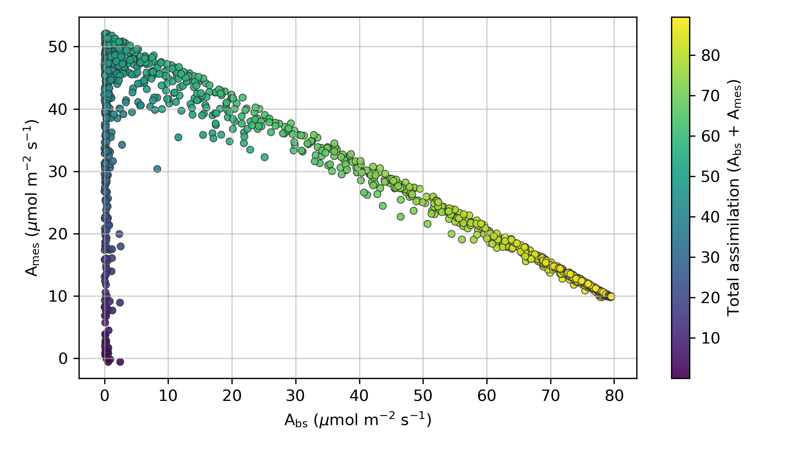

Landscape
Where does the model perform well under a declared objective?
Numerical search can locate high-performing regions. Biological evolution additionally depends on inheritance, accessible variation, selection, drift and historical constraints.
Where does the model perform well under a declared objective?

How did a recorded numerical trajectory move through trait space?

Which solutions remain non-dominated when objectives conflict?